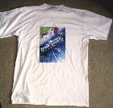
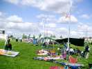
D'abord les tentes, puis les fauteuils, les parasols, la glacière et enfin un cerf-volant. Les toilettes ? Ben y en a pas, faut aller au gymnase (j'ai compté 740 pas, depuis ma tente, faut pas être dans l'urgence...).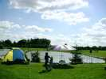
Sylvien a tourné le dos à tout le monde pour voir le lac, mais François a sorti son parasol à vue panoramique et son diable combiné avec bobine, caisse à outil et siège incorporés...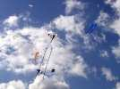
Jean-François (de Fécamp, mais plus de Fécamp-club, faut que je fasse gaffe) a sorti un nouveau toujours Black and White...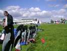
Au sol aussi, ça se meuble... Une rangée de pingouins garde le campement de Xavier !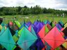
Un splendide cellulaire se prépare, je n'ai même pas pu compter les cellules ! Mais le vent est limité à cette heure... dix secondes de vol, 3 barres à changer, pas rentable !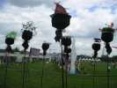
Dans les Jardins du Vent (qu'il ne faut plus appeler comme ça, je le rappelle), une modiste a installé son étalage de chapeaux aériens.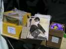
Ludo est venu avec toute sa boutique dont cette belle estampe (japonaise ?), et qui vole...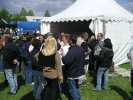
Midi arrive, un petit pot est offert pour patienter en attendant le repas. C'est drôlement organisé : la bordée verte mange d'abord, ensuite les rouges, puis les jaunes.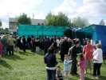
J'étais jaune, j'ai failli mourir, il ne restait plus de cacahuètes. Enfin, on peut y aller, mais il y a encore la queue.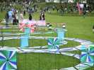
Après-midi... Les roues se préparent, celle de Xavier, celles de Hugo, d'autres, et les "roues triangulaires" de l'équipe Impossible...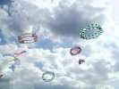
Et tout ça va voler, merci monsieur Cassagnes, dommage que vous ne soyez pas là...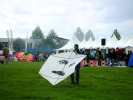
Un fan des sixties a aussi stylisé monsieur Brassens, ses sourcils et sa moustache...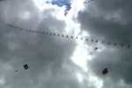
Des oiseaux ? comme s'il en pleuvait, avec ce magnifique train qui vole raide comme un I quel que soit le vent !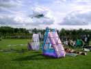
Les triangles "impossibles" se reposent après leur vol sans incident. Même au sol, ils font encore du spectacle !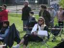
Julie regarde tout ça avec un sourire mélancolique... T'en fais pas, Julie, tu pourras bientôt reprendre le monofil !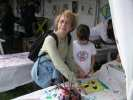
Un atelier consolera ceux qui n'ont pas eu de bonbons.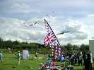
Les britanniques ont réalisé une superbe bannière aux couleurs de leur pays.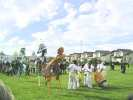
Une Batita, un orchestre de tambours, tambourins, etc... est venu égayer encore l'après-midi, accompagné de danseurs équilibristes sur leurs échasses.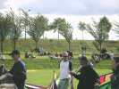
Un Mégateam avec les forces en présence occupera aussi le terrain de démonstration un bon moment (rassurez-vous, les monofils ont heureusement beaucoup de place de l'autre côté).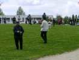
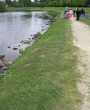
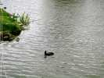